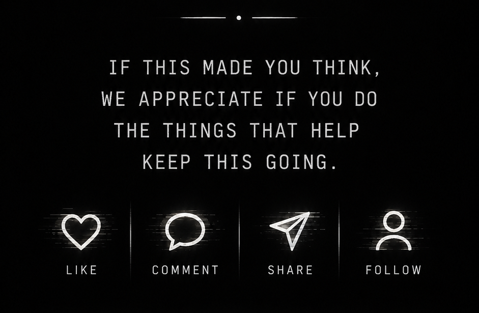

01 — Observe the mind
DON'T THINK
A field guide to investigating thought, attention, memory, identity, and awareness.
The complete path
Begin wherever curiosity finds you. The recommended first doorway is DON'T THINK.
A field guide to investigating thought, attention, memory, identity, and awareness.
Intelligence, fragmentation, technological acceleration, and the civilization threshold.
View the bookA proposed substrate-level framework for interpreting balance across physics.
View the workThe work that exists before the others: an investigation of the minimum reality must contain.
View the book